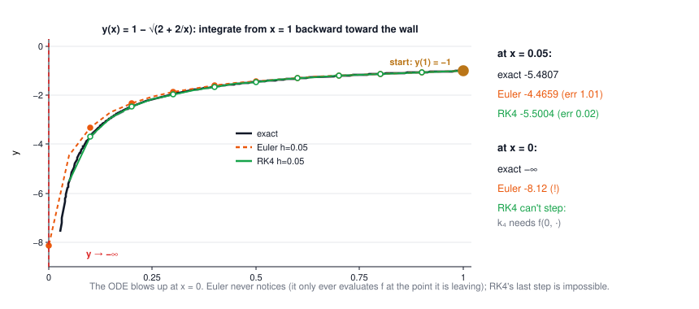
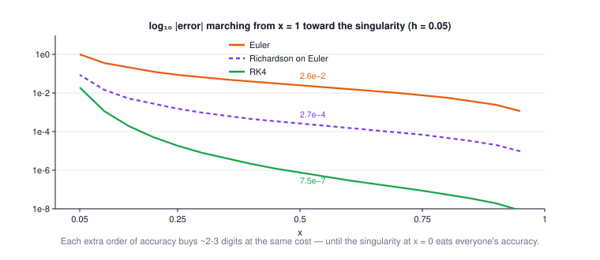
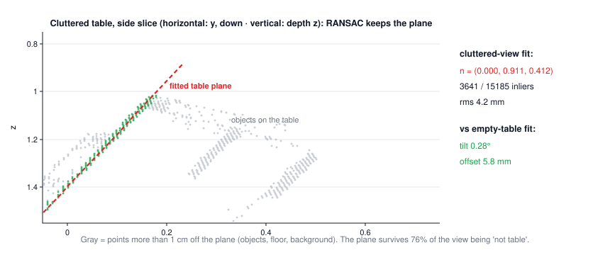
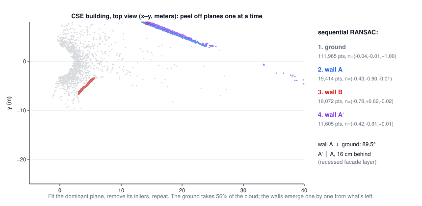

HW3 companion: an ODE with a wall, and planes in real point clouds
CSE 276C, HW3 · due Nov 12 · data in
hw3/ ·
every number on this page computed by scripts/hw3/verify.py.- Q1 · The equation and what it models
- Exact solution — and the trick question about y(0)
- Euler, marching backward
- RK4 — and the step it cannot take
- Richardson extrapolation
- Q2 · The data (and the scrub step nobody tells you about)
- Plane fitting by SVD
- Clutter: RANSAC + refit
- All the planes of a building
- Summary
The big picture
| HW3 part | lecture machinery | the twist in this assignment |
|---|---|---|
| Q1 a | separation of variables | the solution has no finite value at x = 0 |
| Q1 b–d | Lecture 7: Euler, RK4, Richardson | integrating toward a singularity, backward from x = 1 |
| Q2 a | Lecture 2: least squares, SVD | plain LSQ fails — most points aren't the table |
| Q2 b | same, applied repeatedly | peel planes off one at a time (and 33% of pixels are invalid) |
1 · Q1: the equation and what it models
$$\frac{dy}{dx} = \frac{1}{x^2\,(1-y)}, \qquad y(1) = -1, \qquad x \in (0, 1]$$| symbol | meaning |
|---|---|
| \(1/x^2\) | a potential-field force law: it diverges as you approach the obstacle at x = 0 (the spec's "potential field navigation") |
| \(1-y\) | at the start, \(1-y=2\): the slope is positive and finite everywhere on (0,1] |
| condition at x = 1 | the data is at the right end — you must integrate leftward, step −h, toward the wall |
2 · Exact solution — and the trick question about y(0)
The equation is separable: move everything with y to the left, everything with x to the right.
$$(1-y)\,dy = \frac{dx}{x^2} \;\Rightarrow\; y - \frac{y^2}{2} = -\frac{1}{x} + C \;\overset{y(1)=-1}{\Longrightarrow}\; C = -\tfrac12$$Solve the quadratic for y and pick the branch that passes through (1, −1):
$$y(x) \;=\; 1 - \sqrt{2 + \tfrac{2}{x}}$$Worked example: every step (click to open)
Integrate: \(\int (1-y)dy = y - y^2/2\) and \(\int x^{-2}dx = -1/x\). At (1, −1):
\(-1 - \tfrac12 = -1 + C \Rightarrow C = -\tfrac12\). Rearrange
\(y^2 - 2y - (1 + 2/x) = 0\), so \(y = 1 \pm \sqrt{2 + 2/x}\). At x = 1 the root is
\(\sqrt{4} = 2\); only the minus branch gives −1. Check it solves the ODE: differentiating,
\(y' = \frac{1}{x^2\sqrt{2+2/x}} = \frac{1}{x^2(1-y)}\) ✓ (also verified numerically and against
solve_ivp at 10⁻¹² tolerance in verify.py).
So what is y(0)? As \(x \to 0^+\), \(2/x \to \infty\), so
$$y(x) \approx -\sqrt{2/x} \;\longrightarrow\; -\infty$$y(0.05) = 1 − √42 = −5.4807, y(0.01) = −13.21, y(0.001) = −43.74 … there is no finite y(0).
3 · Euler, marching backward (h = 0.05)
$$y_{k+1} = y_k - h\, f(x_k, y_k), \qquad x_{k+1} = x_k - h$$20 steps take you from x = 1 to x = 0. Note Euler evaluates f only at the point it is leaving — so it reaches x = 0 without ever dividing by zero, and happily reports y(0) ≈ −8.12. A finite answer for a quantity that is actually −∞: not an approximation, a blind spot.
| where | exact | Euler | |error| |
|---|---|---|---|
| x = 0.50 (far from the wall) | −1.4495 | −1.4240 | 2.6 × 10⁻² |
| x = 0.05 (one step from the wall) | −5.4807 | −4.4659 | 1.01 |
| x = 0 | −∞ | −8.12 | ∞ |
Measured convergence order at x = 0.5: 0.985 ≈ 1, as theory says. The 40× error growth from x = 0.5 to x = 0.05 is the singularity, not the method: the local error scales with derivatives of y, and those scale like powers of 1/x here.
4 · RK4 — and the step it cannot take
$$k_1 = f(x_k, y_k),\quad k_2 = f(x_k - \tfrac h2, y_k - \tfrac h2 k_1),\quad k_3 = f(x_k - \tfrac h2, y_k - \tfrac h2 k_2),\quad k_4 = f(x_k - h, y_k - h k_3)$$ $$y_{k+1} = y_k - \tfrac h6 (k_1 + 2k_2 + 2k_3 + k_4)$$Errors with the same h = 0.05: 7.5 × 10⁻⁷ at x = 0.5 (vs Euler's 2.6 × 10⁻²) and 2.0 × 10⁻² at x = 0.05. Four orders of magnitude better for 4× the work — Lecture 7's trade, measured on this problem.
5 · Richardson extrapolation
Lecture 7's Bulirsch–Stoer idea in one line: run Euler at h and h/2; since the error is ≈ C·h, the combination
$$y_R = 2\,y_{h/2} - y_h$$cancels the leading error term and upgrades first order to second:
| at x = 0.5 | |error| | |
|---|---|---|
| Euler, h = 0.05 | 2.6 × 10⁻² | |
| Richardson on Euler | 2.7 × 10⁻⁴ | ~100× better for 3× the evaluations |
| RK4 | 7.5 × 10⁻⁷ | still the efficiency king here |
Near the wall (x = 0.05) the same ranking holds: Euler 1.01, Richardson 9.3 × 10⁻², RK4 2.0 × 10⁻².


🕹️ Try it: shrink h and watch who wins where — and what each method claims at x = 0.
- Where you quote the error. "How accurate is your solution" needs a location: a table of |error| at a few x (and the max over the grid) is the defensible answer. Error "at x = 0" is meaningless — the truth is −∞.
- Integration direction. The condition is at x = 1, so you march with step −h. Say so.
- What your RK4 does at the final step (stop at 0.05? shrink the step? why?).
- Which Richardson. This page extrapolates Euler (h, h/2). Extrapolating RK4 or stepping with the midpoint method are equally defensible — name your base method and its order.
6 · Q2: the data — and the scrub step nobody tells you about
Three RealSense-style clouds, one x y z triple per line
(np.loadtxt reads them directly):
| file | lines | valid points | what it is |
|---|---|---|---|
Empty2.asc | 307,200 (= 640×480) | 240,967 | empty table, full frame |
TableWithObjects2.asc | 19,200 (= 160×120) | 15,185 | same table, cluttered, different capture |
CSE.asc | 200,000 | 200,000 | CSE building from the bear courtyard |
P = P[np.linalg.norm(P, axis=1) > 1e-6]. This is the "describe how you
filter the data" part of the question.7 · Plane fitting by SVD
A plane is a point c and a unit normal n with \(\mathbf n\cdot(\mathbf p - \mathbf c) = 0\). The least-squares plane through points P minimizes perpendicular distance — Lecture 2's smallest singular direction:
$$\mathbf c = \tfrac1N\textstyle\sum \mathbf p_i, \qquad P - \mathbf c = U\,\Sigma\, V^\top, \qquad \mathbf n = \mathbf v_3 \;(\text{column of smallest } \sigma), \qquad d = -\mathbf n\cdot\mathbf c$$| symbol | meaning |
|---|---|
| \(\mathbf v_3\) | direction of least spread = the normal (the plane itself spans v₁, v₂) |
| \(\sigma_3/\sqrt N\) | rms point-to-plane distance — your planarity meter |
| \(d\) | plane offset: the plane is \(\mathbf n\cdot\mathbf p + d = 0\) |
Fitting everything (after the zero filter) gives rms 166 mm — the "plane" through table + floor + background is no plane at all. The fit is fine; the point set is wrong.
8 · Clutter: RANSAC + refit
RANSAC in one breath: a plane needs only 3 points, so guess 3 at random, count how many points lie within a threshold of their plane, keep the best guess, then LSQ-refit on its inliers and re-threshold until the inlier set stops changing. Outliers can't vote a wrong plane into winning unless they outnumber and agree with each other.
| table fit (1 cm band) | normal n | inliers | rms |
|---|---|---|---|
| empty cloud | (0.001, 0.909, 0.417) | 72,062 / 240,967 (30%) | 4.0 mm |
| cluttered cloud | (0.000, 0.911, 0.412) | 3,641 / 15,185 (24%) | 4.2 mm |
The two captures (different resolution, slightly different pose) agree to 0.28° in tilt and 5.8 mm in offset — the same physical table, recovered twice, with 70–76% of each view being "not table". Split-half stability: 0.01° (empty), 0.6° (cluttered).

🕹️ Try it: the same algorithm in 2D, including on a real slice of your own data. Watch naive LSQ get dragged by clutter, then let 60 random trials fix it.
9 · All the planes of a building
Part (b)'s "generalize" is three words: fit, remove, repeat. Run RANSAC, delete the winning plane's inliers, run it again on the survivors — each pass surfaces the next-biggest planar structure:
| pass | found | inliers | normal (camera frame) |
|---|---|---|---|
| 1 | ground | 111,965 (56%) | (−0.04, −0.01, 1.00) |
| 2 | wall A | 19,414 | (0.43, 0.90, 0.02) |
| 3 | wall B | 18,072 | (0.78, −0.62, 0.02) |
| 4 | wall A′ | 11,605 | (−0.42, −0.91, 0.01) |
Sanity checks the data passes: wall A ⊥ ground to 89.5°, and "wall A′" is parallel to A just 16 cm behind it — the building's recessed facade layer (windows), not a second building. Stop criterion: when the best remaining plane's inlier count falls below a floor (or its rms stops looking like sensor noise), the dominant planes are out.

- the invalid-point filter (and how many points it removed);
- inlier threshold per scene (1 cm indoors vs 15 cm outdoors) and why;
- number of RANSAC trials (we used 300; the standard \(\log(1-p)/\log(1-w^3)\) formula with w = 0.24 says ~330 for 99% confidence — quote it);
- your stop criterion for "dominant planes".
10 · Summary
- Q1: separable → \(y = 1 - \sqrt{2 + 2/x}\); y(0) is a limit, and the limit is −∞. Say it, don't fudge it.
- Same h, same problem: Euler 2.6 × 10⁻², Richardson 2.7 × 10⁻⁴, RK4 7.5 × 10⁻⁷ (at x = 0.5). Order is everything.
- At the wall, methods fail in different styles: Euler fabricates a finite y(0); RK4 refuses the step. Refusing is more honest.
- Q2: the fit is one SVD; the work is point selection — drop (0,0,0) failures, then RANSAC + iterated refit.
- Repeat-and-remove turns one plane fitter into a building parser: ground 56%, then walls, down to the 16-cm facade recess.